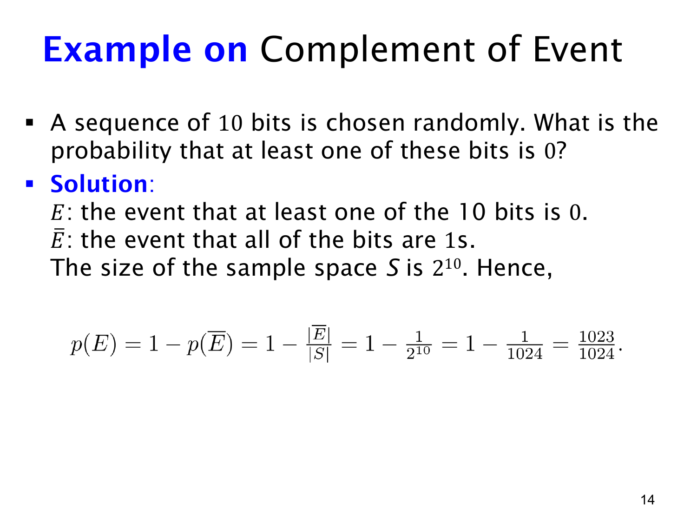

L1.9 · 第 14 页讲解原文
查看这一页课件

十位 bit string 中至少一个 0
从全部长度为 10 的 bit string 中均匀选一个，共有 210=1024 个等可能结果。令 E 表示“至少有一位是 0”。只有串 1111111111 不满足条件，因此
p(E)=1−p(E)=1−2101=10241023.
直接计数也能做。“至少一个 0”包括恰好 1 个、2 个，直到 10 个 0 的情况：
(110)+(210)+⋯+(1010)=210−1.
取补只需去掉一个全 1 串，计算短得多。
若把“第 1 位为 0”“第 2 位为 0”等十个事件的概率直接相加，就会得到 10×1/2=5。一个含多个 0 的串会被数好几次，而且 5 已超过概率的上限。
均匀选择整个串，等价于十个位相互独立，且各位 0、1 的概率各为 1/2。若各位有偏或相关，210 个串未必等可能；“至少一个 0 = 1 − 全部为 1 的概率”仍然成立，只需按新模型计算右侧。